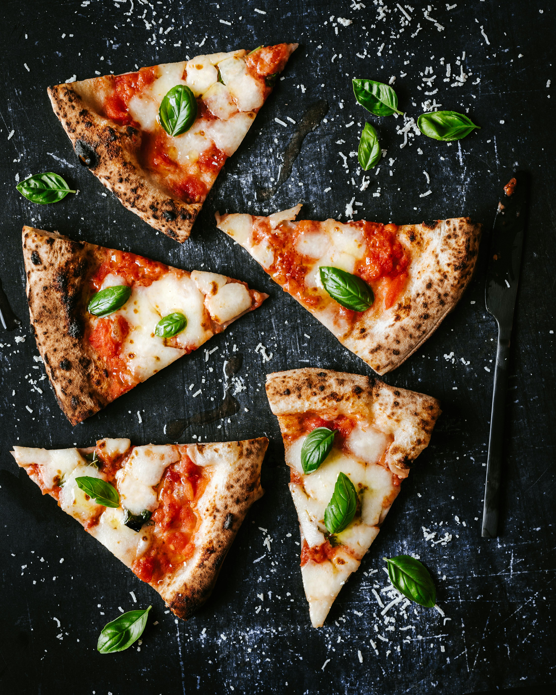

Margherita Pizza

Description
Margherita pizza is a classic Italian dish that celebrates simplicity and quality ingredients. Named after the Italian flag, it features the vibrant colors of tomato, mozzarella, and basil.
This traditional recipe brings together fresh mozzarella, homemade tomato sauce, and aromatic basil on a crispy pizza crust for an authentic Italian experience.
Ingredients
- 500g strong bread flour
- 300ml warm water
- 7g instant yeast
- 10g salt
- 2 tbsp olive oil
- 400g tinned chopped tomatoes
- 2 cloves garlic, minced
- 1 tsp dried oregano
- 250g fresh mozzarella cheese
- Handful of fresh basil leaves
- Salt and pepper to taste
Steps
- Mix the flour, yeast, and salt in a large bowl. Add the warm water and 1 tbsp olive oil, then mix until a dough forms.
- Knead the dough on a floured surface for 10 minutes until smooth and elastic. Place in an oiled bowl, cover, and let rise for 1-2 hours until doubled.
- Prepare the tomato sauce by heating the remaining olive oil in a pan. Add garlic and cook for 1 minute, then add the chopped tomatoes and oregano. Simmer for 15-20 minutes and season with salt and pepper.
- Preheat the oven to 250C/230C Fan/Gas 9.
- Turn out the dough onto a floured surface and stretch into a round pizza base, about 30cm in diameter. Place on a baking tray.
- Spread the tomato sauce evenly over the dough base, leaving a small border for the crust.
- Tear the mozzarella into pieces and scatter over the sauce.
- Bake in the oven for 12-15 minutes until the crust is golden and the cheese is melted and slightly bubbling.
- Remove from the oven and garnish with fresh basil leaves. Drizzle with a little extra olive oil if desired.
- Slice and serve immediately while hot.
Home